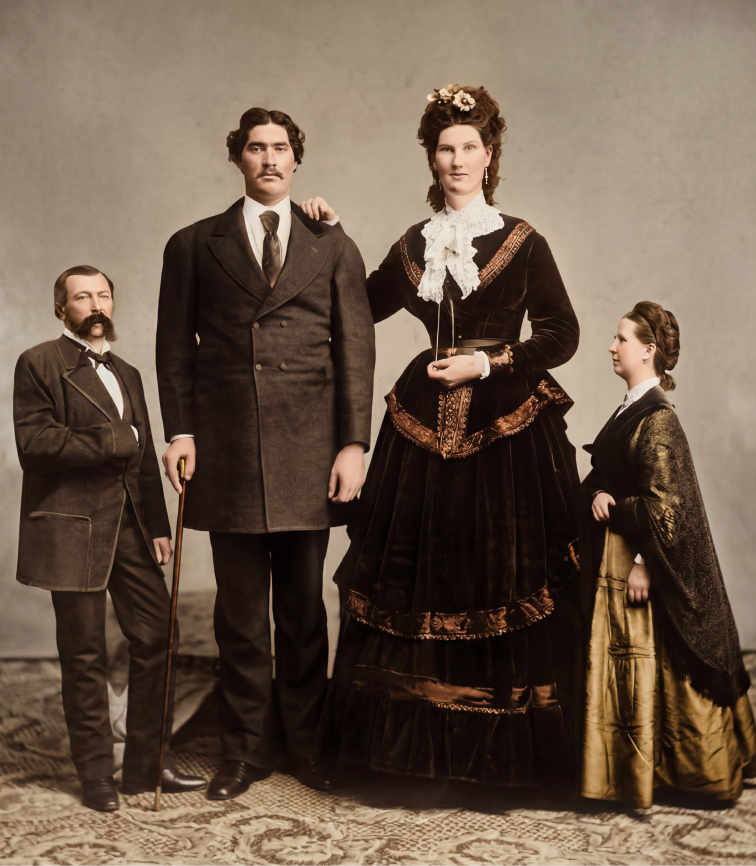
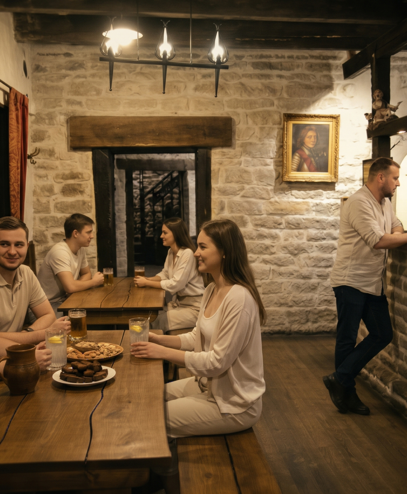
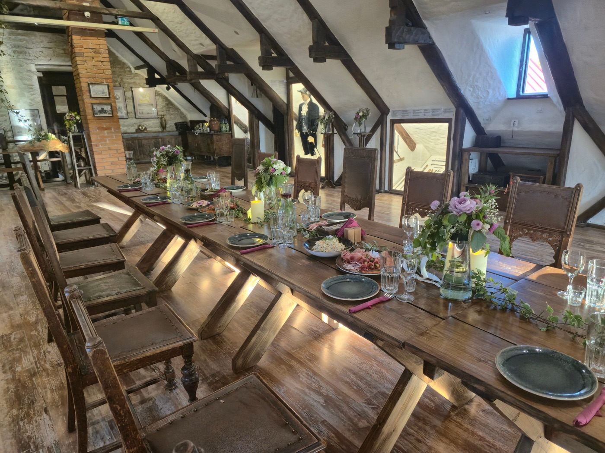
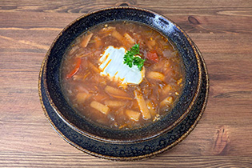

01 Большой осенний праздник в таверне: музыка, ремёсла, старинные рецепты и экскурсии по музею для всей семьи
Все новостиКак прошёл самый длинный день в истории нашей таверны и почему его захотят повторить
Это пример длинной новости: текст-рыба, чтобы посмотреть, как страница выглядит при большом наполнении. Настоящий текст пишут в админке, в разделе «Новости и мероприятия». Абзацы идут один за другим, без промежуточных заголовков, а фото, хэштеги и цитата остаются справа и едут рядом с текстом при прокрутке.
С утра в историческом зале открылась ярмарка мастеров: кузнецы, гончары и переплётчики показывали, как работали ремесленники два века назад. Гости могли сами попробовать отчеканить памятную монету, сшить блокнот вручную и расписать глиняную кружку, которую потом забирали с собой.
К обеду кухня подала блюда по старинным рецептам: щи из печи, пироги с капустой и рыбой, томлёное мясо в горшочках и ягодный морс. Многие рецепты мы восстановили по архивным записям и воспоминаниям старожилов Палдиски, а некоторые из них теперь войдут в наше постоянное меню.
Днём в музее прошли экскурсии по выставке холодного оружия. Экскурсоводы рассказывали, как клинки попадали в коллекцию, чем морской кортик отличается от армейского и какие истории хранят гравировки на рукоятях. Для детей подготовили отдельный маршрут с заданиями и небольшими призами.
Вечером в зале на втором этаже выступили музыканты: звучали романсы, морские песни и мелодии из любимых фильмов. Свечи, деревянные балки и живой звук создали ту самую атмосферу, ради которой к нам возвращаются снова и снова.
Отдельное спасибо всем, кто помогал готовить праздник: нашим поварам и официантам, мастерам ярмарки, музыкантам и, конечно, гостям, которые приехали из Таллина, Кейлы и даже из Финляндии. Без вас этот день не был бы таким тёплым.
Фотографии с праздника — в галерее ниже: нажмите на любое фото, чтобы открыть его крупно и пролистать остальные. Если вы были у нас в этот день и сделали удачные снимки, присылайте их — лучшие мы добавим в галерею.
Следующий праздник планируем весной. Чтобы не пропустить дату и успеть записаться на мастер-классы, подпишитесь на новости — мы пишем раз в месяц и только по делу.







«Свечи, деревянные балки и живой звук — та самая атмосфера, ради которой к нам возвращаются снова и снова»
Актуальное
02 Другие новости
Все новости-
Ноябрь 2026 · Мероприятия
Магия старого кадра: необычная фотосессия
Когда прошлое встречается с настоящим
-
Ноябрь 2026 · Ресторан
Традиционное шведское застолье kräftskiva
Сочные раки и сырный пирог Västerbotten на вашем празднике
-
Октябрь 2026 · Музей
Документальный фильм о выставке холодного оружия
Премьера 12-минутного фильма о коллекции — на эстонском, английском и русском языках.